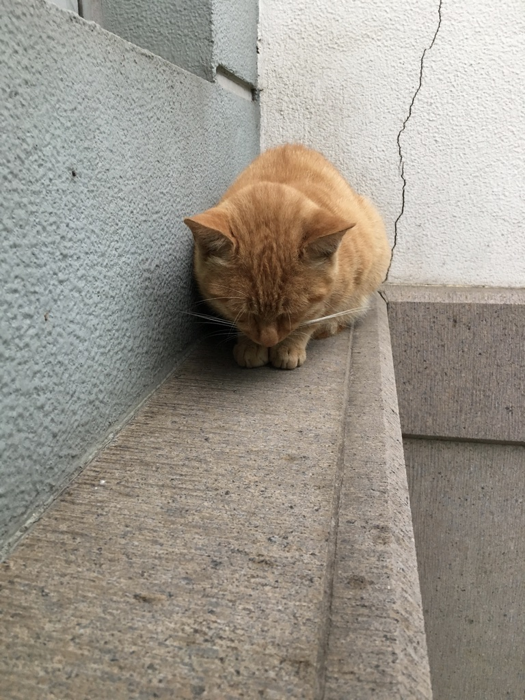
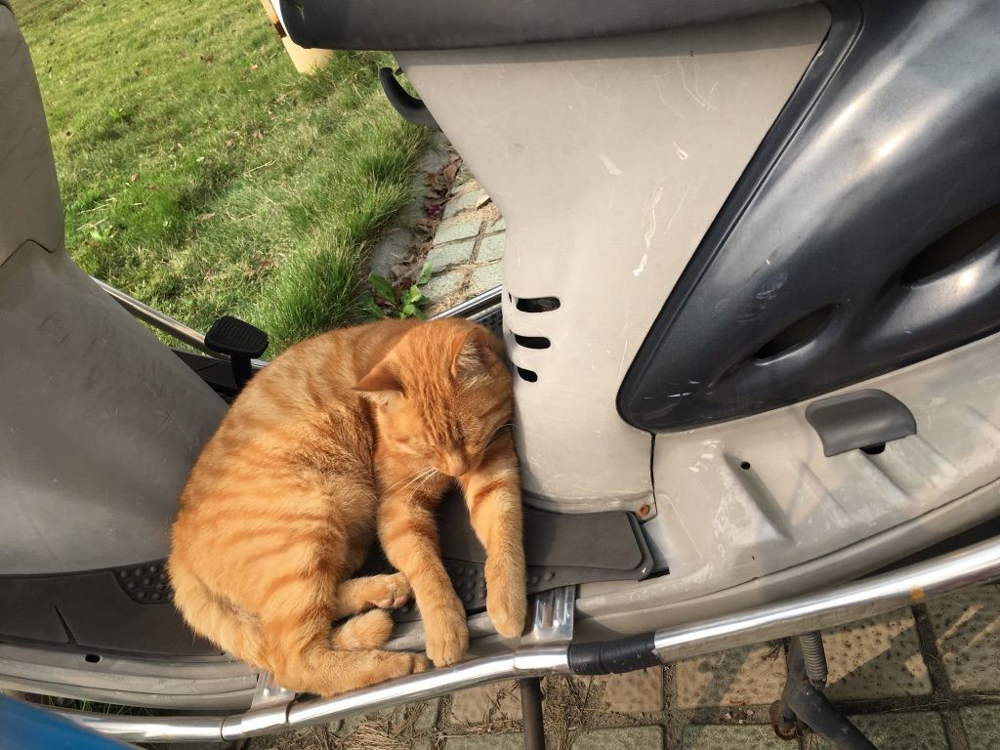
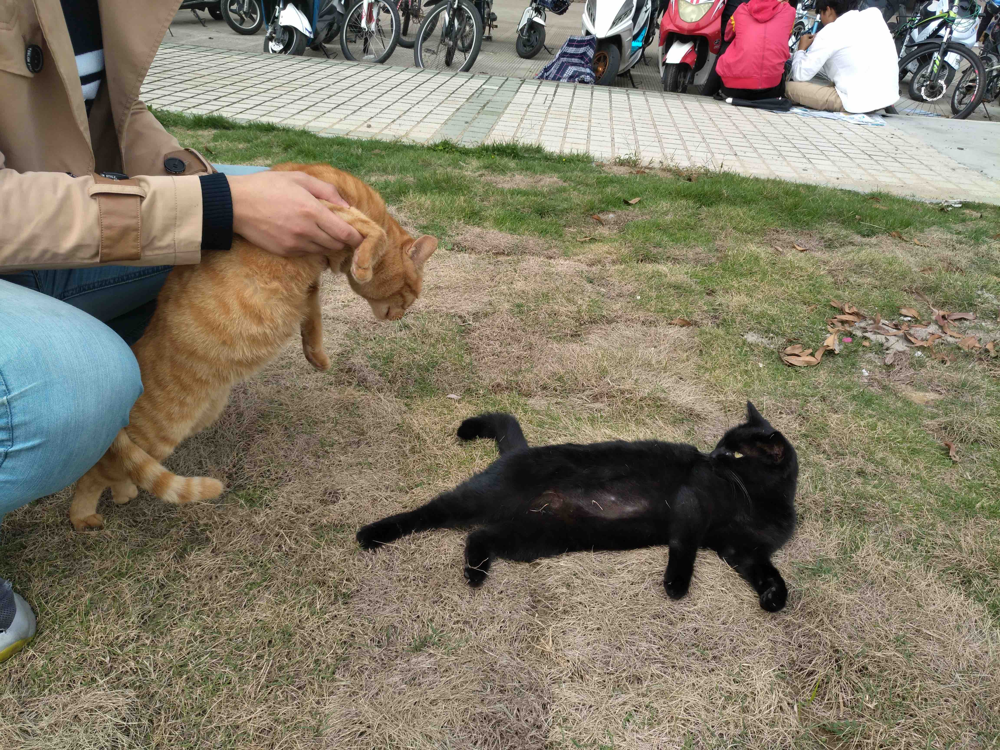

(文末有橘猫照片)
暑假入驻理工楼以后, 跟楼下两只猫咪感情渐好,于是开买猫粮, 每晚投喂. 这其间还有一些挺有趣的事情, 也有一些细思极恐的事情. 细细道来.
温馨的
当一只萌萌哒的猫竖起尾巴跟你问好, 冲着你喵喵叫, 蹭你的时候, 你能拒绝吗!
第一次喂猫的那天晚上, 天气第一次从炎热转凉, T恤已经抵不住微风, 正好那天我心脏还不舒服, 刚吃过药, 然后给楼下两只猫倒了一小堆猫粮, 没想到两只猫打了起来. 哈哈, 那时候真是什么都不懂啊, 完全不懂猫, 这其实是流量猫本能的领地意识, 护食行为之类的, 猫是要一只猫一堆猫粮的喂的. 这也都是后来学会的. 不过当晚那种毛茸茸的手感, 实在是太温馨太治愈了.
一日为奴, 终生为奴.
那日起, 变去网上学习了好多关于猫的习性, 肢体语言, 叫声等知识, 还有一些流浪猫救助的视频, 渐渐感觉自己更加了解楼下两只猫了, 而且每天中午晚上都会有两只小可爱在等你, 真的是不可描述, 太有爱了.
不过两只猫还好, 不是吃饱了就不理睬(或许是我撸猫姿势正确), 平时不是吃饭的时候我路过也会过来跟我玩一会. 应该是我循序渐进, 与猫建立了良好的信任关系, 而且撸猫手法也是琢磨学习过的, 才能让流浪猫这么信任吧.
(橘猫起名字叫: 肥肉, PC, 黑猫叫: 瘦肉, Mac; 我还有一些备选的名字: CPU, GPU, RAM, ROM, 只读非易失性存储器, 显卡, Linux, 石墨烯, 蛋白粉``````)
细思极恐的
有人说, 你对小猫小狗是什么态度, 当你获得了对决的力量.权威之后, 你对普通人民就是什么态度. 我觉得是有道理的. 而且我也一直觉得我是挺有爱的. 我还会去学猫语言, 看猫相关的书, 学习如何和猫相处, 让猫更信任你. 今天黑猫还跟我在草地上打滚了, 漏出肚子给人应该是很信任了吧.
可是, 最近很是想抱那只橘猫. 毕竟橘猫手感真是太棒了! 可是橘猫就是不让我抱. 于是我就从头撸起, 然后是下巴. 一步一步建立信任. 还是不让我抱.毕竟流浪猫很难跟人建立信任到这种地步. 所以, 我决定努力一个月, 让橘猫知道抱起来是安全的.
前方高能, 非战斗人员请撤离!
今天晚上喂猫的时候, 实在是好像抱橘猫啊, 于是, 失去了耐心的我, 强行把猫抱了起来, 喵咪恐惧的喵喵叫, 我急忙蹭蹭他安抚一下, 可是还是挣脱了. 然后就躲着我.
毕竟是流浪猫, 难以建立信任, 而且每天和猫接触的时间就那么点, 吃饭时本应该不打扰, 总之, 不是抱猫的好时机. 可是当时实在是失去了耐心. 我那么费事怎么还不让我抱. 想到段首的论点, 这个场景约等于多年后每天带着妹子玩, 每天琢磨着怎么让妹子开心, 然后突然有一天性欲来了, 妹子却不同意, 然后你就失去了耐心, 为什么还不让我操, 在妹子的尖叫声中强行继续. (雾). 实在是太可怕了! 我仿佛看到了多年后的自己. 那养只猫和保养妹子有什么区别? 猫之后十年寿命, 喵喵喵的时候开心了, 保养妹子十年青春, 而后给个几百万打发走. 我刚才甚至想要不买点猫薄荷试试, 这东西反正也没有损害. 说不定就能抱到猫了. 约等于, 为了操想操的妹子,不择手段.
我一直觉得还是自己还算是比较有修养的人, 可是人终究是人, 在动物本能面前, 那些修养都只是掩饰自己的狂野的心. 这些东西都被写在了你那自私的基因了. 哎?为什么我要用你这个称谓. 或许这博客是给我自己看的吧.
———————————————我是华丽的分割线————————————
不要想太多, 大家都是普通人, 快乐生活, 只要不对社会造成危害. 不作恶. 就好.
还有. 我一定会有猫的!
夏天暴雨中躲在窗台上的橘猫.

秋天晒太阳睡觉的橘猫.

不情愿被我抱起来的橘猫.
